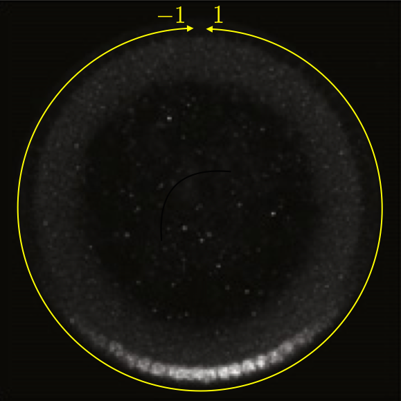

In this experiment, Reeves, Trisnadi, and coworkers measured expression levels of a fusion of Dorsal, a morphogen transcription factor important in determining the dorsal-ventral axis of the developing organism, and Venus, a yellow fluorescent protein along the dorsal/ventral– (DV) coordinate. They put this construct on the third chromosome, while wild type dorsal is on the second. Instead of the wild type, they had a homozygous dorsal-null mutant on the second chromosome. The Dorsal-Venus construct rescues wild type behavior, so they could use this construct to study Dorsal gradients.
Dorsal shows higher expression on the ventral side of the organism, thus giving a gradient in expression from dorsal to ventral which can be ascertained by the spatial distribution of Venus fluorescence intensity.
This can be seen in the image below, which is a cross-section of a fixed embryo with anti-Dorsal staining. The bottom of the image is the ventral side and the top is the dorsal side of the embryo. The DV coordinate system is defined by the yellow line. The image is adapted from the Reeves, Trisnadi, et al. paper.

Fluorescently labeled Dorsal in a cross-section of a Drosophila embryo. Adapted from Reeves, Trisnadi, et al., Dev. Cell., 2012.
A quick note on nomenclature: Dorsal (capital D) is the name of the protein product of the gene dorsal (italicized). The dorsal (adjective) side of the embryo is its back. The ventral side is its belly. Dorsal is expressed more strongly on the ventral side of the developing embryo. This can be confusing.
To quantify the gradient, Reeves, Trisnadi, and coworkers had to first choose a metric for describing it. They chose to fit the measured profile of fluorescence intensity with a Gaussian peak (plus background) and use the standard deviation of that Gaussian as a metric for the width of the Dorsal gradient.
In this lesson, we will use the gradient widths as outputted from this procedure. The units of the widths are dimensionless, consistent with the coordinate system shown in the image above. I asked one of the authors for the data sets used in making the figures. She sent me a MS Excel file that had a separate sheet for each of several figures in the paper that I asked about. We will focus on the data used for Fig. 1F of the paper. In this figure, the authors seek to demonstrate that live imaging with their Venus-Dorsal construct gives a Dorsal gradient of similar width as would be obtained by fixing wild type cells and doing Dorsal antibody staining (the gold standard). These wild type embryos were analyzed as whole mounts and also as cross-sections. They also tried anti-Dorsal staining and anti-Venus staining in the Venus-Dorsal construct. Finally, they also measured gradient widths of a GFP-Dorsal construct that fails to complete development.
15.2 Loading in an Excel sheet
Generally, you should store your data sets in portable formats, like CSV, JSON, XML, HDF5, OME-TIFF, etc., and not proprietary formats. Nonetheless, software like Microsoft Excel is widely used, and you will often receive data sets in this format. Fortunately, Polars can read Excel files, provided they are from fairly recent versions of Excel.
To read in this data set, we will use pl.read_excel(). Importantly, because an Excel document may have many sheets, we need to specify the sheet name we want, in this case 'Fig 1F'.
The data frame is not tidy. Each entry corresponds to one observation, not each row. The column headings contain important metadata, the genotype (wt, dl1/+dl-venus/+, or dl1/+dl-GFP/+) and the method (wholemounts, cross-sections, anti-Dorsal, anti-gfp, Venus (live), and GFP (live)).
The data set has other issues we need to clean up. The column 'anti-gfp dl1/+dl-venus/+' is mislabeled; it should be 'anti-Venus dl1/+dl-venus/+'. We would also like to clean up the genotypes, putting in a semicolon to separate the chromosomes. The wild type columns have the genotype first ('wt') followed by the method, whereas the other columns have the method first, followed by genotype.
15.3 Parsing the column names
We will start our process of tidying this data set by changing the column names. They are pretty messy, so this is best done by hand in this case. We will rename the columns with strings where the genotype comes first, followed by the method for measuring the gradient width, separated by an underscore.
When we unpivot the data frame, the data within it, called values, become a single column. The column names, called variables also populate a new column. So, to unpivot it, we need to specify what we want to call the values and what we want to call the variable. The unpivot() method does the rest!
df = df.unpivot( variable_name='genotype_method', value_name='gradient width').drop_nulls()# Take a lookdf.head()
shape: (5, 2)
genotype_method
gradient width
str
f64
"WT_whole mount"
0.1288
"WT_whole mount"
0.1554
"WT_whole mount"
0.1306
"WT_whole mount"
0.1413
"WT_whole mount"
0.1557
Nice! We now have a tidy data frame. Note that we also dropped the null values, since the nulls from the original columns come along for the ride when unpivoting.
Note that df.unpivot() has other options. For example, you can specify columns that do not comprise data, but should still be included in the unpivoted data frame using the id_vars keyword argument. That does not apply to this data frame, but comes up often. As a final comment, note that unpivoting is sometimes called melting, as it is when using Pandas.
15.5 Splitting the genotype_method column
Now our goal is to convert the 'genotype_method' column into two columns, one encoding genotype and the other the method. To do this, we first use Polars’s string methods to split the entries in the column at the underscore. This gives a series of list data types. We then convert the list to a struct, where the fields are the column labels we want when we split the column into two, in this case 'genotype' and 'method'. Finally, we can unnest the column with our structs.
df = df.with_columns( pl.col('genotype_method') .str.split('_') .list.to_struct(fields=['genotype', 'method'])).unnest('genotype_method')# Take a lookdf.head()
shape: (5, 3)
genotype
method
gradient width
str
str
f64
"WT"
"whole mount"
0.1288
"WT"
"whole mount"
0.1554
"WT"
"whole mount"
0.1306
"WT"
"whole mount"
0.1413
"WT"
"whole mount"
0.1557
Looking at the data frame above, it is very tall. Each row only has a single value, that is, a single measurement, and every other column in the row is metadata associated with that measurement, specifically the genotype and method. Unpivoting operations generally make data frames taller, with more rows than before unpivoting.